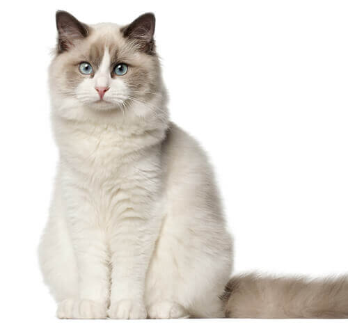

El ragdoll es un gato dócil y dulce, igualmente popular entre las familias que en hogares unipersonales a causa de su comportamiento amable y su naturaleza tranquila. No tendrá ningún problema en asumir el papel de «mejor amigo» con cualquier persona, y le encantará pasar el día jugando con sus dueños.

Esperanza de vida
De 12 a 17 años
Peso
Entre 4,5 y 9 kg
Aspecto del ragdoll
El ragdoll es un gato grande, impresionante y con un pelaje exuberante. Bajo su impresionante manto superior, sedoso, denso y de longitud semilarga a larga, se esconde un gato largo y musculoso de pecho fornido, cuello corto y patas robustas. La cola es larga y poblada y, en el gato adulto, el pelaje formará una especie de perneras peludas en las patas traseras y una majestuosa gorguera alrededor del cuello y la garganta
Personalidad del ragdoll
El ragdoll se describe como un gato «increíblemente estable» y un felino absolutamente afable, relajado y afectuoso para convivir. Aunque será raro que el propietario de un ragdoll tenga solo uno, ya que su precioso y dulce aspecto y su carácter lánguido son irresistibles.
El ragdoll es un felino curioso y bastante aficionado a ayudar en las tareas cotidianas, pero preferirá sentarse encima de tu libro o tus papeles u observarte desde un lugar soleado mientras trabajas en el jardín, antes que dedicarse a cualquier actividad demasiado extenuante.
Durante algún tiempo, se fomentó la afirmación de que el ragdoll era extremadamente flexible, que tenía un umbral del dolor muy bajo y que, cuando lo cogías, simplemente «se abandonaba». Algunas personas entendieron esto como que el gato resultaba un juguete estupendo para los niños, pero no es así. El ragdoll no es flexible, y tiene el mismo umbral del dolor que los demás gatos. Y, desde luego, no tolerará que los niños (o cualquier otra persona) lo traten como a un juguete.
Nutrición y alimentación
Cada gato es único y tiene sus propias filias, fobias y necesidades particulares en lo que respecta a la comida.
Higiene del ragdoll
El ragdoll necesitará un cepillado diario desde gatito, ya que su pelo puede enredarse con bastante facilidad.
INFORMACIÓN GENERAL DE SALUD
Miocardiopatía hipertrófica, una dolencia por la que el músculo cardíaco sufre un engrosamiento anómalo que hace que el corazón no pueda latir bien.
Enfermedad renal poliquística, una enfermedad hereditaria que se caracteriza por la formación de quistes en los riñones. Esto afecta a la función renal y puede terminar ocasionando una insuficiencia renal. No obstante, conviene señalar que el riesgo de presentar esta enfermedad en esta raza es menor que en otras razas que tienen una predisposición a este problema.